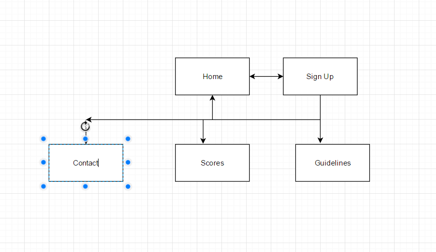

CP1406 - Assignment 1 - Project Plan
Name: Jaimee Robb
Goals:
The overall goal of this website is to increase the number of playing by at least 50%. The site is needed as 'Slammerz' does not get enough publicity through word of mouth alone and requires some assistance to reach a number of players that is satisfactory. It will benefit the client by increasing publicity and allowing people to sign up from the comfort of their own home or on the spot through a mobile phone.
Success Evaluation:
The success of the website will be evaluated by comparing the amount of players at the point before the website is launched to the amount of players either 2 or 3 months after the launch.
Target Audience:
The audience that will be targetted will be people aged 15-30 years, gender is a non-issue. The focus will be highschool students who will hopefully continue to play after highschool.
Site Flowchart:

GitHub Repository
Enter your repo name and edit the URL here. Make sure your GitHub repo is public.